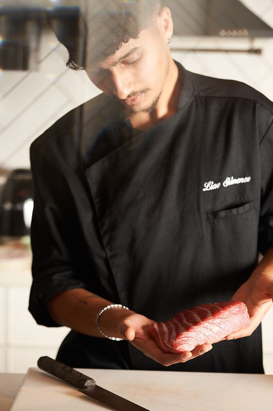
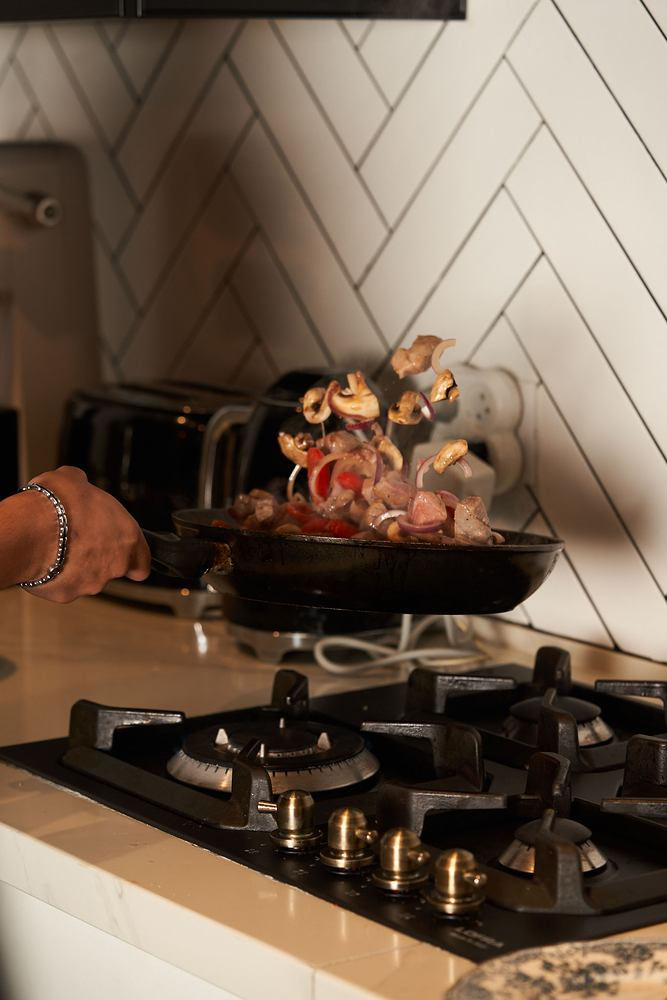
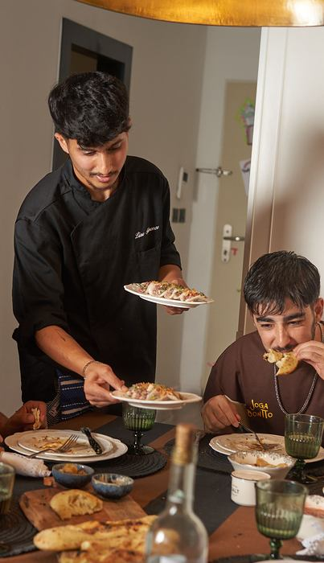
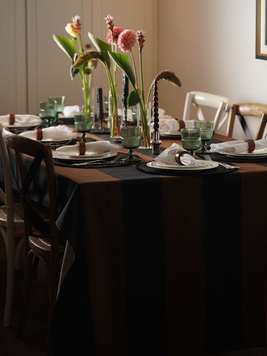
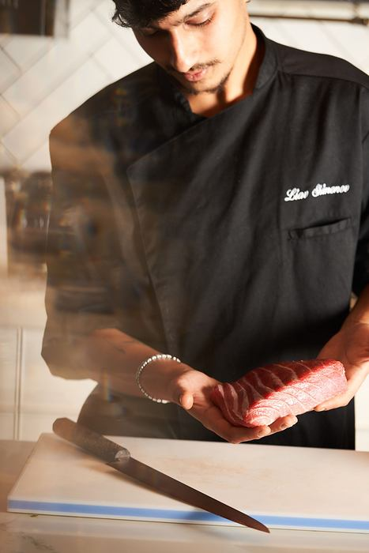
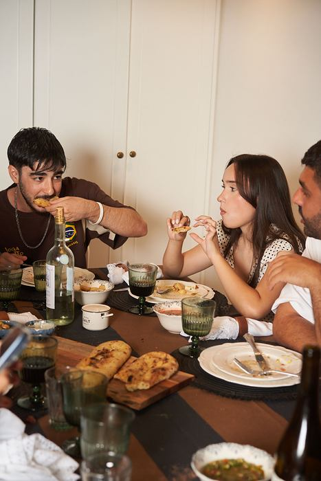
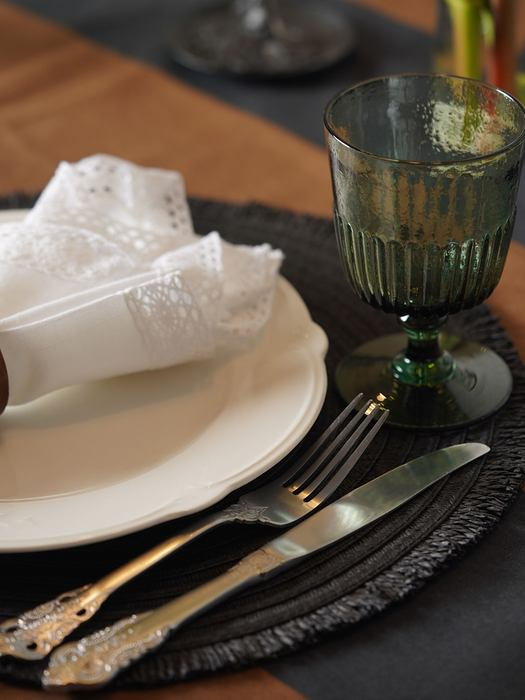
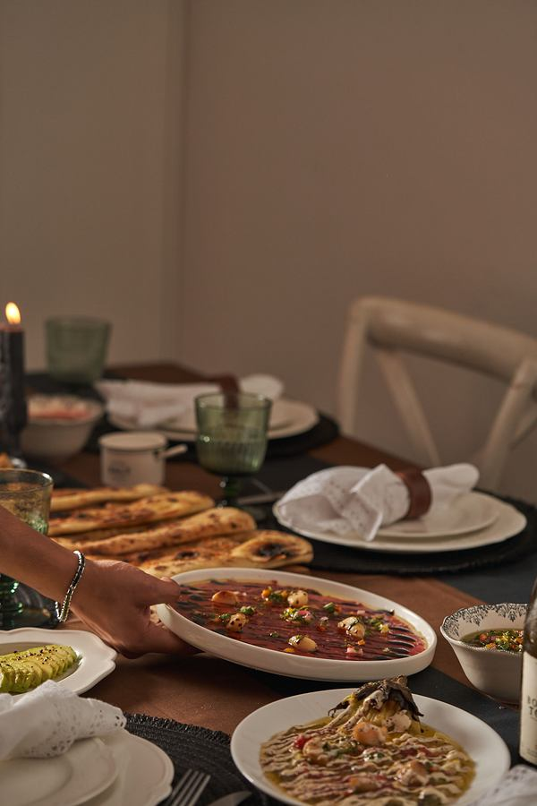

ארוחות פרטיות בבית
ואירועים
המסעדה,אצלכם בבית.
אני ליאב, שף פרטי. אני מגיע אליכם עם חומרי הגלם, הסכינים והתפריט - ומבשל ומגיש הכול במקום. ארוחה לחברים ולמשפחה, או אירוע שלם.
כל ערב מתחיל בשיחה: כמה תהיו, מה אתם אוהבים ומה פחות. משם אני בונה תפריט שמתאים בדיוק לשולחן שלכם, ואתם נשארים עם האורחים.


ערב שלם,לא רק ארוחה.
נרות דולקים, יין שנמזג, מנה שיוצאת מהמטבח בדיוק בזמן - והשיחה שנמשכת הרבה אחרי הקינוח.
מהמזמינים.
שתי דרכים לשבת לשולחן. בשתיהן התפריט נכתב עבורכם, ובשתיהן אתם לא נכנסים למטבח.

ארוחה פרטית בבית
ארוחת שף לחברים או למשפחה, בבית שלכם. תפריט שנבנה סביבכם, מבושל ומוגש במקום.
לתיאום ארוחה
אירועים
ימי הולדת, ערבי חברה ומפגשים גדולים. השולחן גדל - והיחס נשאר אישי.
לתיאום אירוע1שיחה קצרה
תאריך, מספר אורחים, מה אוהבים ומה לא. ככה מתחילים.
2תפריט אישי
אני בונה תפריט בשבילכם, ומשנים יחד עד שהוא מרגיש נכון.
3הערב עצמו
אני מבשל ומגיש. אתם יושבים עם האורחים ונהנים.
מאמרים.
כל מה שכדאי לדעת לפני שמזמינים שף הביתה.

שף פרטי בבית: איך זה עובד מהשיחה הראשונה ועד הקינוח
מה קורה לפני, מה קורה ביום עצמו, ומה אתם צריכים להכין.

שף פרטי או קייטרינג? איך בוחרים לאירוע בבית
ההבדלים האמיתיים, ומתי כל אחת מהאפשרויות מתאימה יותר.

איך עורכים שולחן שמרגיש כמו מסעדה
פרחים, נרות, מפיות וכוסות - פרטים קטנים שעושים ערב גדול.

בואו נקבעערב.
שלחו הודעה עם תאריך משוער ומספר אורחים, ונתחיל לבנות את התפריט.
- אינסטגרם@liav_shimonov_
- וואטסאפ054-208-8166